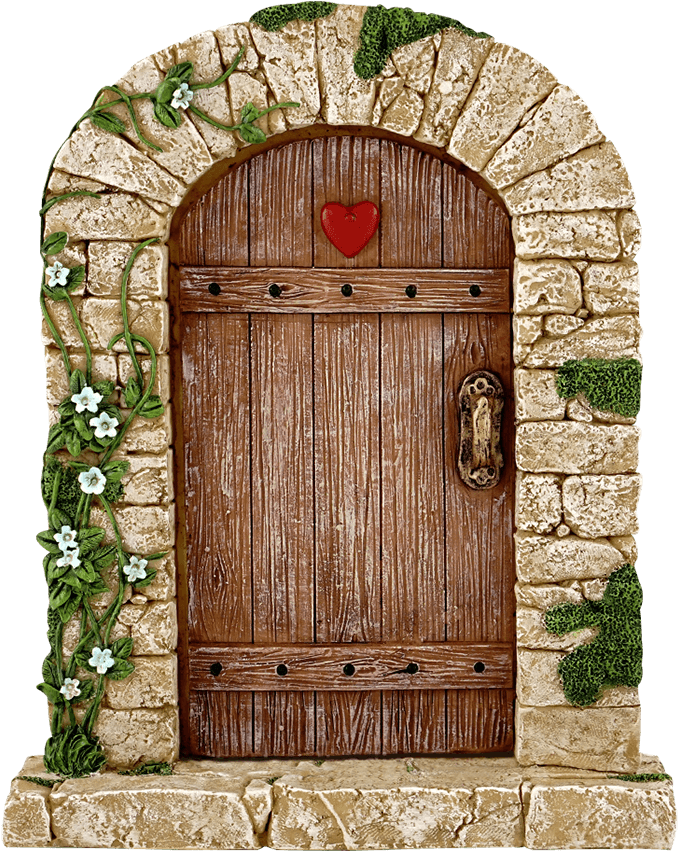

Swing Doors: The most traditional type of door, hinged on one side and swings open in one direction. They can be single or double doors.
Sliding Doors: These doors move horizontally along a track, commonly used in areas where space is limited. They can be used for interior or exterior applications.
Folding Doors: Also known as bi-fold or accordion doors, these consist of panels that fold together, ideal for rooms where space saving is important, such as closets or smaller rooms.
French Doors: Double doors that open from the center, often with glass panes from top to bottom. These doors provide a sense of openness and light, frequently used in patios and entryways.
Pocket Doors: Sliding doors that disappear into the wall when open, providing a sleek and space-saving option.
Revolving Doors: These doors consist of multiple panels that rotate around a central axis, commonly found in commercial buildings to manage traffic flow and maintain energy efficiency.
Dutch Doors: A door divided horizontally into two halves, allowing the top half to open independently of the bottom. They are often used in farmhouses or kitchens.
Security Doors: These are reinforced doors designed to protect against intruders and are commonly used in commercial or high-security environments. They are typically made of metal and may include locks, bolts, and other protective mechanisms.
Wood: Traditionally used for doors, wood offers warmth, aesthetic appeal, and insulation. Types of wood commonly used include oak, mahogany, and pine. Wooden doors can be solid or hollow core (lighter and less expensive).
Metal: Steel, aluminum, and wrought iron are often used for security doors, industrial doors, and exterior doors due to their durability and strength. Metal doors can also provide better soundproofing and fire resistance.
Glass: Often used for exterior doors such as French doors, patio doors, or sliding doors, glass allows natural light to pass through. They can be clear, frosted, or tinted, depending on the level of privacy needed.
Fiberglass: Known for its strength and resistance to weather conditions, fiberglass doors are commonly used for exterior applications. They often mimic the appearance of wood but are more durable and require less maintenance.
PVC (Polyvinyl Chloride): A lightweight and cost-effective option, PVC doors are often used for interior applications or as budget-friendly exterior doors.
Composite Materials: These doors are made from a mix of materials like wood, PVC, and other substances. They provide a balance between aesthetics, insulation, and cost.
A typical door consists of several components: Door Leaf (Panel): The main part of the door, which swings or slides to open and close. Frame: The structure around the door that holds it in place. It includes the door jambs (vertical sides), the head (top), and the sill (bottom) for a doorframe. Hinges: The metal components that attach the door to the frame and allow it to swing open and closed. Handle/Knob: The mechanism used to open and close the door. Handles may be knobs, levers, or pulls. Lockset: A locking mechanism, including a latch, bolt, and any deadbolt or electronic lock. This provides security and privacy. Threshold: The strip at the bottom of the door frame, often serving to seal the gap between the door and the floor. Weatherstripping: Material placed around the door frame to prevent drafts and improve insulation. Sill or Bottom Rail: The part of the door at the bottom that can act as a barrier to water or debris.
Doors serve a variety of purposes in homes, businesses, and other spaces. These purposes can be broadly classified as: Privacy: Doors provide privacy by separating rooms or spaces within a building. This is especially important in bedrooms, bathrooms, and offices. Security: Doors are a key component of securing a building. Strong, lockable doors prevent unauthorized access and protect valuables. Insulation: Doors contribute to energy efficiency by insulating the interior of a building. Insulated doors help to maintain temperatures, reducing the need for heating or cooling. Aesthetic Appeal: Doors are often a focal point in home design and architecture. From ornate wooden doors to sleek modern styles, doors contribute to the overall style and curb appeal of a building. Soundproofing: Thick doors or those with special seals can provide sound insulation, which is particularly useful in offices, bedrooms, or music studios. Ventilation and Light: Doors with windows, like French or sliding doors, allow for airflow and sunlight. This can help in reducing the need for artificial lighting and improve indoor air quality.
 Сайт створений для комп`ютерної академії ITSTEP